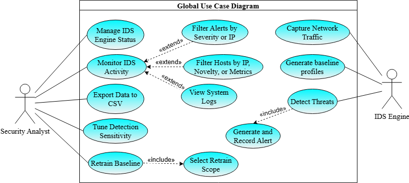
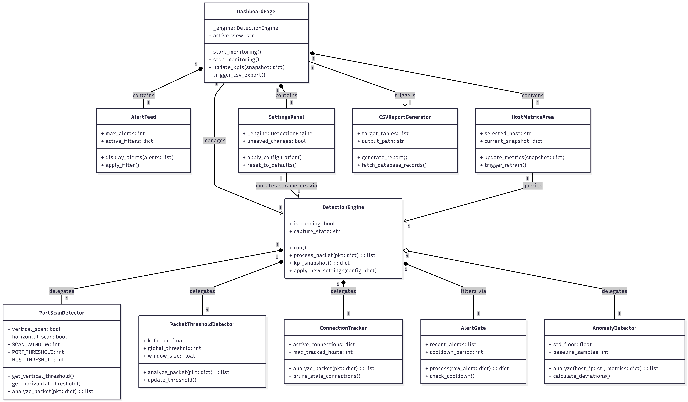

Design and Implementation of a Hybrid Intrusion Detection System
Academic Graduation Project Defense
Author: AYADI Wassim (GLSI3 — 3226052)
Institution: Faculty of Sciences of Tunis El Manar
Supervisor: Ms. Naama Amdouni
Jury President: Ms. Zekri Manel | Reporter: Ms. Riahi Ines
Defense Date: June 11, 2026 | Academic Year: 2025–2026
Agenda
Introduction
General Context
Project Preparation
Sprints and Implementation
Conclusion and Future Improvements
Host Organization
A premier academic institution fostering innovation in Computer Science, engineering, and Information Security research.
Providing the academic framework, rigorous standards, and resources necessary for advanced engineering graduation projects.
Introduction
Evolving Cyber Threat Landscape
Network attacks are growing in volume and sophistication, consistently bypassing traditional perimeter defenses.
Critical Need for Visibility
Organizations require deep, real-time network observability to detect breaches in progress before exfiltration occurs.
The Role of IDS
Intrusion Detection Systems (IDS) serve as the vital internal alarm system for network infrastructures, bridging the gap left by firewalls.
Project Context
Developed at FST (Feb–May 2026) to engineer a modern, lightweight, and adaptive detection engine suitable for rapid deployment.
Problem Statement
Signature-Only Limitations
Traditional systems (e.g., standard Snort rules) fail against zero-day exploits and highly obfuscated, custom attacks.
Anomaly-Only Drawbacks
Purely behavioral systems often generate unacceptable rates of false positives and are computationally heavy to train.
The Observability Gap
Many open-source tools lack intuitive, real-time observability without relying on heavy external dependencies (like ELK stacks).
The Requirement
A need for a self-contained, Hybrid Approach balancing precision (signatures) with adaptability (behavioral analysis).
Existing Systems: IDS Taxonomy
| Category | Definition | Strengths | Weaknesses |
|---|---|---|---|
| HIDS Data Source |
Monitors individual host logs/files | High accuracy for local events | Blind to broader network context |
| NIDS Data Source |
Analyzes network traffic passively | Broad visibility, stealthy | Struggles with encrypted payloads |
| Misuse / Signature Mechanism |
Matches traffic against known attack patterns | Near-zero false positives for known threats | Useless against zero-day attacks |
| Anomaly Mechanism |
Flags deviations from a statistical baseline | Can catch novel, unknown attacks | High false positive rate initially |
Proposed Solution
Combines deterministic rule-matching with adaptive behavioral profiling in a single, unified engine.
Python-based engine avoiding the bloat of enterprise SIEMs for immediate local deployment.
Live packet capture integrated directly into time-window aggregation for immediate metrics.
A custom PySide6 graphical dashboard providing instant filtering, visualization, and runtime control.
Objectives & Functional Requirements
Key Functional Requirements (FRs)
Real-time packet sniffing and filtering.
Detection of port scans and volumetric floods.
Dynamic profiling of per-host behavior.
Suppression of alert storms (AlertGate).
Live parameter tuning via GUI.
Non-Functional Requirements (NFRs)
Near-zero queue latency
Crash recovery & DB WAL
Extensible OOP architecture

Methodology
Agile/Scrum adapted for a single-developer environment. 4 Sprints, spanning 4 weeks each.
Developer: Wassim AYADI
Scrum Master/PO: Ms. Naama Amdouni
Delivery Flow
Capture & Signatures
Baselines & Anomalies
TShark & Reliability
PySide6 GUI & Admin
System Architecture
Technologies Used
Python 3.10+ chosen for rapid prototyping and extensive security libraries.
TShark (C-native backend for performance) interfaced via Python subprocess.
Scapy utilized strictly at the analysis layer for deep packet inspection.
SQLite 3 in WAL (Write-Ahead Logging) mode to prevent lock contention under concurrent writes.
PySide6 (Qt for Python) providing a modern, threaded, reactive UI.
Native Python threading and thread-safe queues for decoupling capture, analysis, and rendering.
Sprint 1: Core Capture & Signature Detection
Sprint 1 / 4Strict separation of Capture, Detection Engine, Data Models, and Main processes.
Vertical Scan: Single host scanning multiple ports.
Horizontal Scan: Single port scanned across multiple hosts.
SYN Flood: Volumetric exhaustion tracking.
Kernel-level traffic pre-filtering
Validating logic pre-GUI

Sprint 2: Behavioral Baselines
Sprint 2 / 4Traffic aggregated into discrete 10-second blocks. Tracking SYN counts, unique dst ports, unique dst hosts, and total packets.
Adapts baseline progressively while smoothing noise.
EMAₜ = (1−α) · EMAₜ₋₁ + α · xₜ
Measures standard deviations from the mean to detect behavioral spikes.
Zₕ = (valueₕ,ₜ − μₕ) / σₕ
Standard Deviation: σₕ = √( Σ(xᵢ − μ)² / N ) (floor σ_eff = max(σ, 1.0))

LOW (Z≥1.5)
MEDIUM (Z≥2.5)
HIGH (Z≥3.0)
CRITICAL (Z≥4.0)
Sprint 3: Optimization & Reliability
Sprint 3 / 4Replaced Scapy capture with TShark subprocess, drastically reducing CPU overhead via C-native parsing.
Deduplication using composite keys and severity-tiered cooldowns to prevent UI-freezing alert storms.
Queue backpressure logic, auto-restart on capture crash, and system heartbeat monitoring.
Empirical Calibration Results
| Parameter | Target Detector | Calibrated Value | Effect |
|---|---|---|---|
k-factor |
Scans / Floods | 2.0 |
Balances sensitivity for volumetric attacks |
k-factor |
Anomaly Profiler | 1.0 |
Allows standard Z-score tiering to function |
STD Floor |
Anomaly Profiler | 1.0 |
Prevents divide-by-zero during flat traffic |
Sprint 4: Graphical Interface
Sprint 4 / 4A reactive, dark-themed command center decoupled from the core engine via thread-safe shared queues.
Live throughput, active connections, and database health metrics.
Scrolling event list with instant severity coloring.
Deep dive into specific IP behavior, history, and baseline stats.
Collapsible view into system heartbeat and debug traces.
UI filters (by host, severity) apply instantly in-memory without blocking or waiting for database queries.
Sprint 4: Administration & Settings
Sprint 4 / 4Runtime Settings Panel
All detector thresholds (k-factors, windows, cooldowns) are tunable live. No system restart required—changes propagate to the engine instantly via configuration injection.
Data Management & CSV Export
One-click generation of forensic reports from the SQLite alerts table, empowering post-incident analysis.
Baseline Retraining
Administrators can trigger a manual baseline reset for specific hosts or globally if network topology changes. Enforced cooldowns prevent accidental spamming.
Dataset & Testing Environment
Controlled local network to simulate both normal user behavior and targeted attacks safely without risking external infrastructure.
Real workstation browsing, media streaming, and local file transfers executed to build authentic, noisy EMA baselines.
• Vertical Scans: nmap -sS <target>
• Horizontal Scans: nmap -p 80 192.168.1.0/24
• SYN Floods: Burst traffic & rapid connection cycling
Iterative observe-and-adjust methodology to tune Z-score thresholds, practically eliminating false positives during heavy web browsing.
Results & Detection
• Instantaneous detection of standard Nmap scans.
• Accurate identification of SYN floods breaking fixed connection thresholds.
• Successfully flagged sudden bursts in unique destination ports.
• Novelty classification correctly tagged newly seen hosts vs. recurring offenders.
Minor deviation during a large file download.
Sustained unusual connection rates.
Clear behavioral anomaly matching attack profiles.
Aggressive scanning or flooding (bypasses cooldowns).
Performance Analysis
Successfully prevented alert fatigue. A sustained 5-minute flood generated 3 discrete alerts instead of 30,000.
Even under flood conditions, decoupling capture and analysis kept queue depth near zero (validated via Heartbeat logs).
SQLite WAL mode handled high-frequency batch inserts from the 10-second aggregations without locking the GUI reads.
The architecture remains vulnerable to "low-and-slow" attacks, as the 10-second tumbling window resets before slow attack thresholds trigger.
Challenges Overcome
False Positives
Shifted from static rules to EMA-smoothed baselines and Z-score evaluations to allow thresholds to float dynamically.
Scapy CPU Load
Replaced native Scapy sniffing with a TShark subprocess for heavy lifting, reserving Python only for metadata analysis.
DB Lock Contention
Implemented SQLite Write-Ahead Logging (WAL) and automatic retry mechanisms for safe concurrent DB access.
Future Improvements
Replace basic statistical anomaly detection with advanced ML models (e.g., Isolation Forests) to catch low-and-slow attacks.
Upgrade from a local workstation sniffer to a SPAN/Gateway deployment architecture for whole-network visibility.
Integration with local firewalls (e.g., `iptables` / Windows Defender) to automatically isolate compromised hosts upon detection.
Add support for exporting alerts in structured formats (Syslog/CEF) for direct integration into enterprise SOC environments.
Conclusion
Successfully met all 17 Product Backlog Items (PBIs) defined at the start of the project.
Demonstrated that combining signatures with behavioral baselines provides a far more resilient defense than either method alone.
The iterative Scrum methodology allowed for continuous pivot and optimization (e.g., successfully swapping capture engines mid-project).
Engineered a highly practical, observable, and educational security tool that provides immediate network insights without the enterprise bloat.
Thank You
Questions & Discussion
System: Hybrid Intrusion Detection Engine
Candidate: AYADI Wassim
Academic Year: 2025–2026